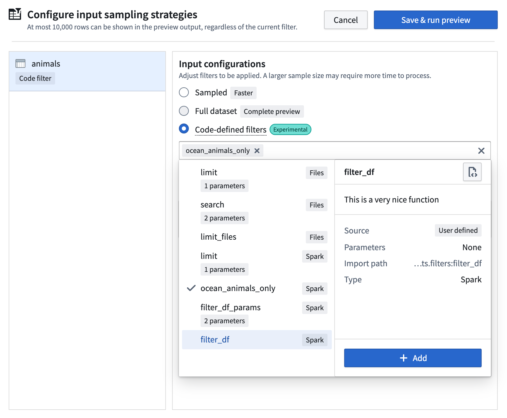
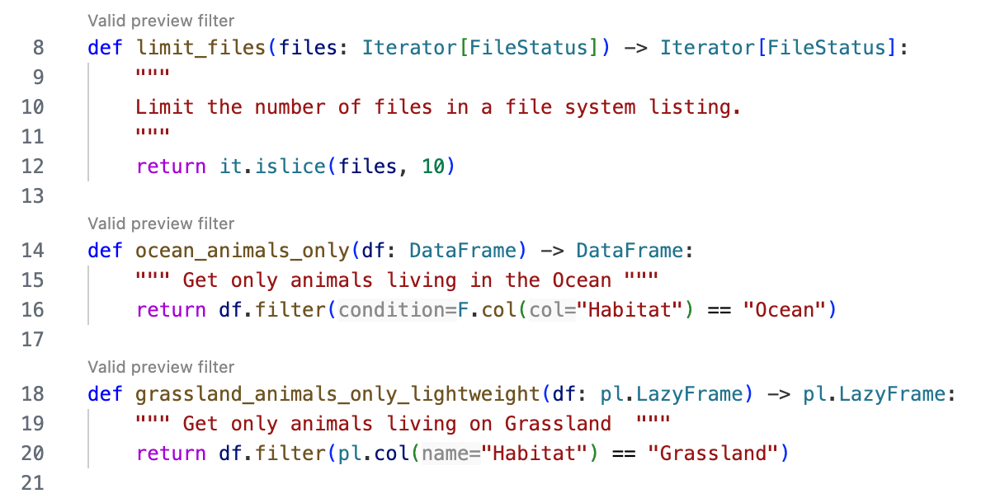
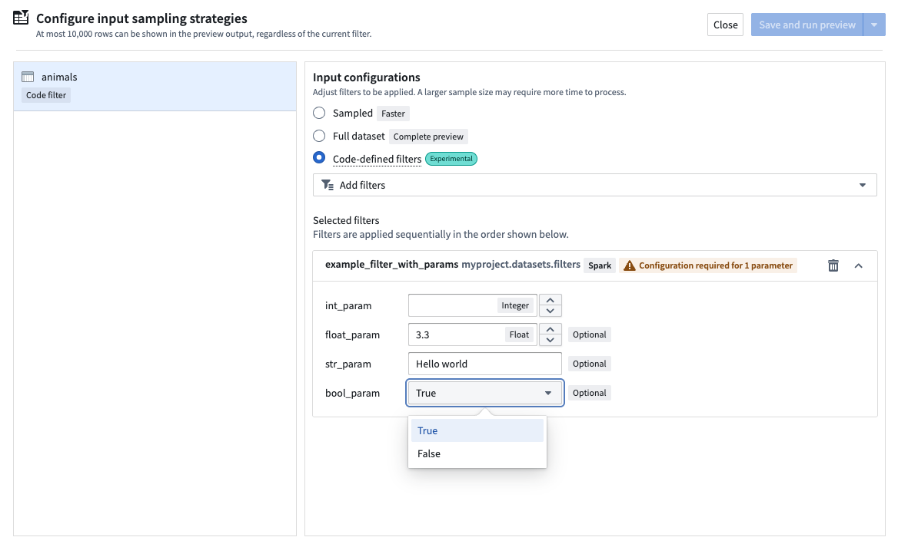

Apart from the Sampled and Full dataset input strategy configurations discussed in the preview transforms documentation, VS Code preview also supports a Code-defined filters option. This allows you to write custom Python functions that control exactly what data gets loaded during transform preview. Instead of relying on random sampling or full dataset loading, you define the precise logic for what subset of data should be used.
When applicable, these filters leverage pushdown predicates â to ensure that only the most relevant data samples are loaded. The Palantir extension for Visual Studio Code automatically discovers all eligible functions that can be used as filters in your repository and displays them in a dropdown menu when configuring your preview.
Test specific scenarios: Focus on edge cases or specific data conditions that matter for your development without sorting through irrelevant data.
Create reusable logic: Write a filter once and use it across multiple preview sessions, making your development workflow more consistent.
Fine-tune performance: For large datasets where even full dataset loading is slow, you can optimize exactly what data gets filtered.
Combine multiple filters: Select and chain multiple filters in any order to create sophisticated sampling strategies.
Code-defined filters option.
The extension automatically discovers all eligible filters anywhere in your project codebase and displays them in the selection dropdown menu.
To create an eligible preview filter from a Python function, the rules listed below must be followed.
The function must be
(pyspark.sql.DataFrame) -> pyspark.sql.DataFrame(polars.LazyFrame) -> polars.LazyFrame(collections.abc.Iterator[transforms.api.FileStatus]) -> collections.abc.Iterator[transforms.api.FileStatus]The function should NOT
if, with, for or other statementsasync or private function (function names cannot start with _)The following example lists some valid preview filter functions:
from pyspark.sql import DataFrame
from pyspark.sql import functions as F
from collections.abc import Iterator
from transforms.api import FileStatus
import itertools as it
import polars as pl
def limit_files(files: Iterator[FileStatus]) -> Iterator[FileStatus]:
""" Limit the number of files in a file system listing."""
return it.islice(files, 10)
def ocean_animals_only(df: DataFrame) -> DataFrame:
""" Get only animals living in the Ocean """
return df.filter(F.col("Habitat") == "Ocean")
def grassland_animals_only_lightweight(df: pl.LazyFrame) -> pl.LazyFrame:
""" Get only animals living on Grassland """
return df.filter(pl.col("Habitat") == "Grassland")
You will receive immediate feedback on whether your functions are eligible for use through the CodeLens hint that appears above the filter functions:

You can make your filters more flexible by adding parameters. This allows you to create generic, reusable filter functions that adapt to different scenarios.
* symbol before the parameters.The following is an example with a parameter:
from pyspark.sql import DataFrame
from pyspark.sql import functions as F
def filter_animals_by_habitat(df: DataFrame, *, habitat: str) -> DataFrame:
""" Get only animals living in the Ocean """
return df.filter(F.col("Habitat") == habitat)
Note the * symbol before the habitat parameter; this classifies it as a keyword-only argument.
Currently supported parameter types are the following:
strintfloatboolYou can provide default values for parameters in the function signature. If a default value is provided, the parameter becomes optional, and the default value will be used if you do not enter a value at configuration time:
from pyspark.sql import DataFrame
from pyspark.sql import functions as F
def example_filter_with_params(
df: DataFrame, *, int_param: int, float_param: float = 3.3, str_param: str = "Hello world", bool_param: bool = True
) -> DataFrame:
"""This is an example function with many parameters of different types"""
print(f"int_param: {int_param}, float_param: {float_param}, str_param: {str_param}, bool_param: {bool_param}")
return df.limit(int_param)
When you select a filter with parameters for preview, a prompt will appear for each parameter:

The filter selection dropdown menu will show filters available for use; however, based on your transforms context, selecting a specific filter type might be more suitable.
DataFrame filters.LazyFrame filters.Iterator[FileStatus] filters.